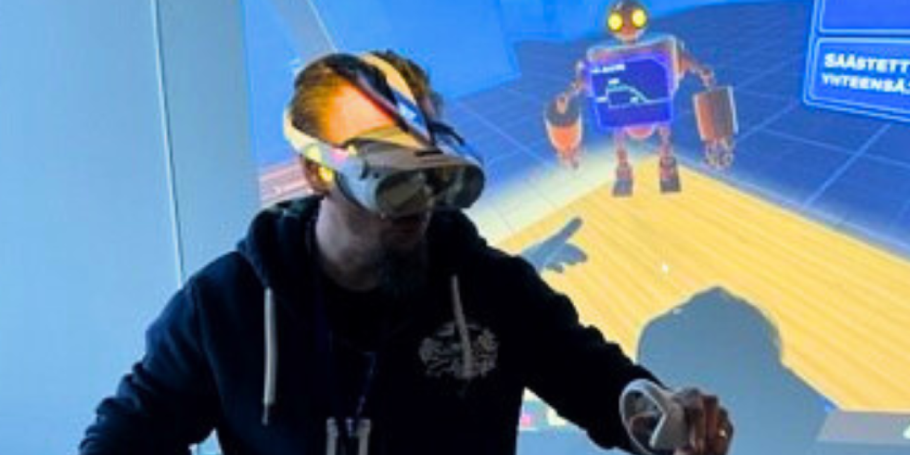

Olen Taitotalossa töissä. Taitotalo (AEL-Amiedu Oy) on Suomen suurin aikuisten ammatillinen kouluttaja, joka tarjoaa koulutusta monipuolisesti eri toimialoille.
Toimin kehitysvastaavana digitaalisessa toimintaympäristössä, jossa edistän Taitotalon digipalveluiden ja henkilöstön digitaalisten valmiuksien kehittymistä. Vastuualueeni kattaa monipuolisesti erilaisten digitaalisten ratkaisujen ja toimintamallien kehittämistä – mukaan lukien teknologioiden, järjestelmien ja uusien toimintatapojen käyttöönottoa sekä niiden sujuvaa jalkauttamista osaksi arjen toimintaa.
Vastaan myös eri toimialojen pedagogisten sovellusten sekä ravintola- ja kongressitoiminnan järjestelmien palveluista. Näissä tehtävissä toimin yhteyshenkilönä toimittajiin kehitys- ja lisenssiasioissa, varmistaen ratkaisujen jatkuvan toimivuuden ja kehittymisen. Lisäksi osallistun erilaisiin kehitysprojekteihin joko projektipäällikkönä tai koordinaattorina – ja tulevina vuosina olen mukana myös laajemmissa, organisaation tulevaisuuden toimintaa muovaavissa hankkeissa.
Olen alun perin kouluttautunut sähköasentajaksi ja myöhemmin suorittanut talotekniikan ammattitutkinnon. Pitkän työrupeaman talotekniikka-alalla, viimeiset vuodet yrittäjänä, jälkeen päädyin sattumusten kautta kouluttajaksi omalle alalleni. Vuonna 2020 suoritin ammatillisen opettajan pätevyyden. Luonteeni ja kiinnostukseni myötä ajauduin työssäni yhä enemmän digitaalisten ratkaisujen kehittämiseen, mikä johti lopulta tieto- ja viestintätekniikan insinööriopintoihin. Valmistuin insinööriksi vuonna 2024 ja olen toiminut kehitysvastaavan tehtävissä vuodesta 2022.
Työskentelytapani on ratkaisukeskeinen ja uudistumishaluinen. Olen luonteeltani innovatiivinen ja motivoidun erityisesti tilanteista, joissa pääsen haastamaan itseäni, kehittämään toimintaa ja löytämään tehokkaampia ratkaisuja. Rutiiniluonteiset tehtävät eivät innosta – sen sijaan haluan jatkuvasti oppia uutta ja viedä asioita eteenpäin. Kehitän osaamistani muun muassa alan kirjallisuuden kautta, ja sovellan työssäni ITIL4 Foundation -kurssilta omaksumiani palvelunhallinnan periaatteita.
Tavoitteenani on tuoda lisäarvoa kehittämällä digitaalisia ratkaisuja, jotka tukevat organisaation tavoitteita ja auttavat henkilöstöä menestymään modernissa, jatkuvasti muuttuvassa toimintaympäristössä.

Ensimmäinen tieteellinen artikkelini ”Visio, yhteistyö ja oppiminen: Taitotalon matka VR-pelien kehittäjäksi” julkaistaan ITK – Interaktiivinen Tekniikka Koulutuksessa 2025 -julkaisusarjassa. Lisäksi esiinnyn ITK-foorumilla 25.4.2025 aiheellani ”Virtuaalitodellisuuspelit uudistavat ammatillisen koulutuksen”.
Vapaa-aika
Kaikenlainen liikunta ja itseni fyysinen haastaminen ovat lähellä sydäntäni. Olen harrastanut CrossFitiä kahdeksan vuoden ajan – ei kilpailumielessä, vaan keinona pitää keho ja mieli hyvässä kunnossa. CrossFitistä on tullut myös tärkeä osa parisuhdettamme, sillä käymme tunneilla yhdessä vaimoni kanssa. Se on meille parhainta laatuaikaa.
Iän karttuessa liikunnan merkitys korostuu entisestään. CrossFitin lisäksi harrastan suunnistusta, pääasiassa yhdessä lapsuudenystäväni kanssa. Pyrimme käymään viikoittain kuntorasteilla, ja osallistumme säännöllisesti myös Rogaining-tapahtumiin. Niissä haastetaan sekä fyysistä että henkistä kestävyyttä, kun rasteja etsitään useiden tuntien ajan vaihtelevassa maastossa.
Lisäksi nautin juoksemisesta ja maantiepyöräilystä – molemmat tarjoavat omalla tavallaan tilaa ajatuksille ja hyvää rasitusta keholle.
Urheilun ohella tärkeä osa elämääni on musiikki. Laulan bändissä nimeltä Heiskanen & Muut, joka on ollut koossa jo yli kymmenen vuotta. Kirjoitan pääosin yhtyeen kappaleiden sanoitukset. Keikkailemme nykyisin harvemmin, mutta muutama vuosi sitten soitimme kymmeniä keikkoja vuodessa – kokemus, joka on jättänyt pysyviä muistoja ja intohimon esiintymiseen.